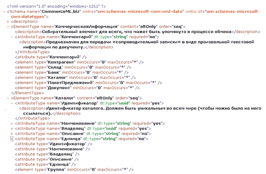
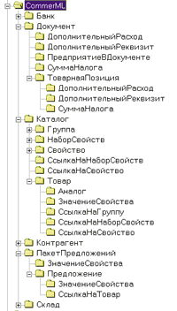
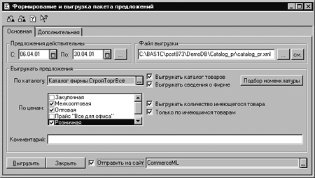
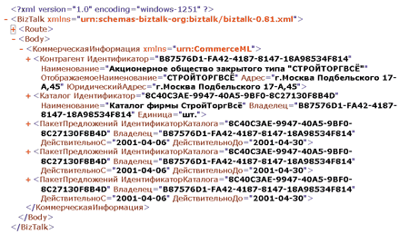
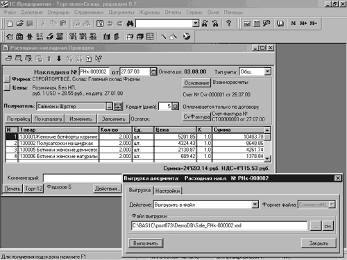
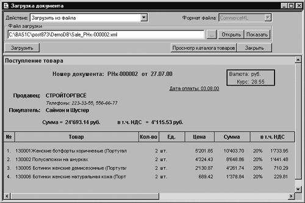
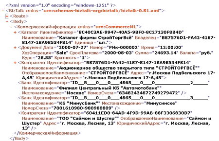
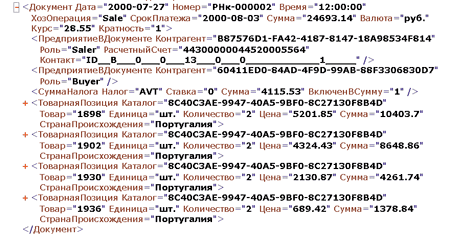
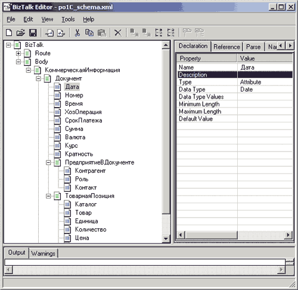
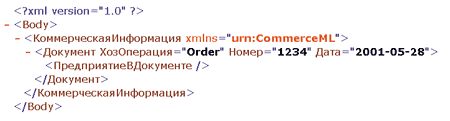

Для практической реализации идей электронного бизнеса необходимо решить целый ряд чисто технологических вопросов. Среди них особо выделяется проблема интеграции разнородных информационных ресурсов, решение которой требует создания простого и надежного механизма обмена данными между различными приложениями, причем как внутри корпоративных систем, так и при взаимодействии различных организаций.
Технология XML требует организационной поддержки
Сегодня, кажется, уже все знают: XML - вот золотой ключик, который должен навести порядок в хаосе великого множества форматов данных. Однако при ближайшем рассмотрении легко увидеть, что эта технология может действительно эффективно использоваться только в сочетании с решением целого ряда организационных вопросов. Конкретно: требуется механизм разработки и поддержки стандартов различного уровня - от масштаба предприятий до международных.
Напомним, что в основе XML и HTML лежит один и тот же принцип: информация записывается в виде простого текста, в котором имеются управляющие команды (теги) и собственно данные. XML отличается от HTML тем, что позволяет передавать не только данные, но и информацию об их структуре. Отметим, что оба этих языка представляют собой упрощенный вариант давно известного языка SGML (Standard Generation Markup Language).
Сама по себе идея языка XML - текстового описания структуры и содержания некоторых данных совсем не нова. Главное здесь то, что лидеры компьютерной индустрии вроде бы осознали необходимость перехода от внутренних, закрытых форматов к общим, открытым. Но, честно говоря, судить о том, серьезное ли это намерение (а не маркетинговые акции, чтобы показать свою готовность к открытости), можно будет лишь спустя некоторое время. Тем не менее сегодня XML - это мировой отраслевой стандарт, создание и развитие которого идет под эгидой World Wide Web Consortium (W3C), общественной организации, представляющей интересы входящих в нее участников рынка.
Появление общего стандарта описания данных избавляет разработчиков ПО от необходимости придумывать собственные форматы, причем речь идет даже о решении сугубо внутренних задач. Разумеется, за любую универсальность приходится расплачиваться определенной избыточностью, но в данном случае она не столь велика и не будет сколько-нибудь заметна на современных компьютерах.
Вместе с тем нужно отметить, что текстовое представление данных имеет свои недостатки. Один из них - проблемы с использованием символов, задействованных в качестве специальных (например, "<" и ">"). Вторая проблема - неоднозначность преобразования данных из внутреннего двоичного формата в текст и наоборот. В последнем случае особое внимание нужно уделять специфике национальных форматов, особенно при работе с разными региональными установками и кодовыми таблицами. Проблемы эти решаемы, но о них нужно помнить.
Объектная модель документов, XML-анализаторы и XML-схемы
Одна из основных составляющих технологии платформно-независимого информационного взаимодействия различных приложений - это использование объектной модели документов XML (Document Object Model, XML DOM), стандарт которой принят комитетом W3C. Интерфейс XML DOM обеспечивает доступ к иерархической структуре, содержимому и стилям документа независимо от платформы и языка программирования.
Тут нужно отметить, что DOM - это общее понятие для некоторой совокупности моделей представления документа в виде "дерева" подчиненных фрагментов. Иными словами можно, например, говорить о DOM для Word-документов, DOM для HTML и т.п. В данном случае мы ведем разговор об XML DOM.
Следует также разобраться в соотношении понятий "DOM-документ" и "XML-документ", которые, с одной стороны, почти тождественны, с другой - качественно отличны. DOM-документ, создаваемый приложением, - это внутренний объект последнего, и в общем случае о его физической реализации ничего не известно (так же, как мы работаем с документами Word, ничего не зная о формате его хранения). Содержимое DOM-документа становится доступным для всех остальных приложений в результате его сохранения в формате XML-файла. Таким образом, XML-документ - это представление DOM-документа на языке XML.
На примере Visual Basic логика работы с этими документами выглядит следующим образом:
Set xmlDoc = New DOMDocument ' Создание нового объекта ' Далее - работа по формированию документа ... xmlDoc.Save "File.xml" ' Сохранение в виде XML-файла ... xmlDoc.Load "NewFile.xml" ' Чтение XML-файла ' ' Далее выполняется работа с DOM-объектом |
Для работы с XML-документами применяется специальное ПО под общим собирательным названием XML-анализаторы (XML parsers), которые предоставляют разработчикам приложений механизм создания DOM-документа в виде программного интерфейса взаимодействия с этим документом, а также преобразования его в XML-формат и обратно. При этом функции анализаторов выходят далеко за рамки синтаксического разбора документа (parse - выполнять синтаксический разбор), обеспечивая широкий спектр операций со структурой и содержимым DOM-документов.
При создании приложений в среде Windows разработчики вполне естественно ориентируются на средства Microsoft, в данном случае на использование объектной библиотеки XML Parser (MSXML), третья (последняя на сегодня) версия которой была выпущена в ноябре 2000 г. Она заменила версии MSXML 2.0 и 2.5, поставлявшиеся соответственно в составе Internet Explorer 5.0 и Windows 2000. MSXML 3.0 можно свободно загрузить по адресу http://msdn.microsoft.com/xml.
Сам по себе язык XML не решает проблемы обработки XML-документов, что необходимо при обмене данными между приложениями. Упрощенно говоря, XML лишь связывает, например, некоторый набор чисел с понятием "цена", но что означает данный термин, язык уже не может расшифровать. Таким образом, для правильной интерпретации содержимого XML-документов необходимо описание его структуры.
Принципиально здесь то, что использование структурного языка позволяет задавать формальные правила, определяющие возможный структурный состав документа и типы данных. С их помощью формируется фактически новый язык на базе XML. Совокупность таких правил образует XML-схему. Более того, для разных фрагментов XML-документа можно применять различные схемы, используя механизм пространства имен; иначе говоря, один документ может использовать коллекцию схем.
Существует несколько способов описания таких правил. Самым перспективным на данный момент считается XML Schema, вытесняющий более традиционный DTD (Document Type Definition), возможности которого гораздо скромнее. Одно из преимуществ XML Schema в том, что само описание схемы представляет собой XML-документ, сформированный по определенным правилам. Однако следует иметь в виду, что стандарт XML Schema официально пока не принят.
Ниже мы подробнее рассмотрим некоторые принципы формирования XML-схем на примере CommerceML.ru, а пока отметим некоторые общие моменты.
XML-схемы - стандарты на компьютерном языке
Фактически XML-схемы - это некая форма описания стандартов документов на компьютерном языке. При этом, в отличие от знакомых многим брошюр с ГОСТами и ОСТами, схема не только декларирует набор постулатов, но также в непосредственном виде используется для контроля за структурой и синтаксисом документа. Такую операцию часто называют проверкой состоятельности (validation). Эти операции выполняют программы-анализаторы, либо автоматически в процессе загрузки и коррекции документа, либо по запросу из приложения.
Однако следует подчеркнуть, что такая автоматическая проверка чаще всего не обеспечивает 100%-ной гарантии правильности документа. В любом случае нужно учитывать разъяснения по применению компонентов схемы.
Говоря о XML-схеме как о некотором стандарте специфического вида, полезно вспомнить, что российский "Закон о стандартизации" выделяет четыре уровня стандартов: стандарты предприятий, научно-технических сообществ, отраслевые и государственные. Подчеркнем сразу, что даже многие ГОСТы носят не обязательный, а рекомендательный характер.
Любой стандарт - это результат компромисса внутри некоторого сообщества заинтересованных сторон. Это, в частности, означает, что должен существовать механизм поддержки цикла жизнедеятельности стандарта (принятие изменений, их внесение и пр.). На уровне предприятия или государства это регулируется соответственно директором или Президентом. А как быть с отдельными (порой относительно небольшими) сегментами экономики?
Обратим внимание и на специфику разработки стандартов. С одной стороны, они должны соответствовать требованиям времени и даже немного опережать их (чтобы предотвратить хаотичное развитие ситуации). С другой стороны, они должны быть весьма консервативны - какой от них толк, если они будут постоянно меняться? Понятно также, что по мере расширения сферы действия стандартов либо увеличивается сложность их разработки, либо снижается конкретика и детальность описаний.
Тут можно с сожалением отметить, что отечественные субъекты рыночной экономики, освободившись от всеобъемлющей опеки государства, только начинают осваивать методы совместного решения общих проблем, в том числе и в области стандартизации. И в этой связи, конечно же, очень интересен зарубежный опыт, где можно постоянно видеть примеры взаимодействия, казалось бы, заклятых конкурентов ради достижения компромиссов.
Этот вопрос можно обсуждать отдельно, а пока отметим, что подавляющее число промышленных стандартов (в том числе в ИТ-индустрии) создаются по инициативе самих предприятий, разумеется, при самом активном участии лидеров. Довольно часто в этой работе уже на начальном уровне участвуют представители государства (как правило, в качестве экспертов), однако далеко не все договоренности доходят до уровня регистрации официальными органами (хотя разработчики, естественно, всячески стараются повысить статус своего труда).
Инициатива BizTalk
Необходимость стандартизации XML-обмена на уровне некоторых общих отраслевых задач и была одной из причин появления инициативы BizTalk (авторство ее принадлежит Microsoft, http://www.microsoft.com), которая была поддержана лидерами многих отраслей и поэтому сразу превратилась в межиндустриальную. В марте 1999 г. был создан руководящий комитет BizTalk Steering Committee (http://www.biztalk.org), в который входят ведущие в своих отраслях поставщики, органы стандартизации и корпоративные заказчики. Первая версия спецификаций Framework Document Specification 1.0, разработанных Microsoft, была утверждена и опубликована в конце 1999 г.
Инициатива BizTalk нацелена на решение следующих задач:
- создание единой реферативной модели;
- подготовка набора описаний спецификаций разнообразных служб;
- разработка бизнес-документов;
- формирование глоссария элементов данных для схем на основе XML.
Практическая работа комитета BizTalk заключается также в подготовке стандартов документов для различных прикладных областей (медицины, электротехники, энергетики и пр.). Именно поэтому данная инициатива считается межиндустриальной. Эта задача решается путем формирования единой базы данных о разнообразных XML-схемах, которые позволяют правильно интерпретировать и обрабатывать содержимое XML-документов.
На первом этапе применения XML подразумевалось, что собственно создание XML-схем документов должно выполняться разработчиком оригинальных документов. Например, XML-схемы для документов системы R3 разрабатываются компанией SAP (http://www.sap.com), т.е. в этом случае речь идет о своего рода стандарте предприятия. Но в этом случае очевидно, что обмен данными между разными приложениями требует механизма преобразования - желательно автоматического - данных, представленных разными схемами. Именно в этом и состоит одна из функций таких средств, как Microsoft BizTalk Server 2000 (см. "BYTE/Россия" №2'2001, с. 36).
Однако есть и другой путь: создание XML-схем, соответствующих более высокому уровню общности задач, - например, на уровне обмена коммерческой информацией между торговыми организациями. Понятно, что работать с одной схемой гораздо удобнее, чем с набором разных; но столь же очевидно, что разработка таких универсальных решений сложнее, в том числе и с организационной точки зрения.
Всем известна обратная сторона универсальности - сложность разработки, неэффективность использования ресурсов, трудность оперативной модернизации и т. п. Поэтому, скорее всего, следует ожидать, что большинство XML-схем будет относиться к уровню предприятий и достаточно узкоспециализированных предметных областей. А на более высоком уровне обмен информацией будет происходить с помощью конвертеров между разными схемами.
Первая российская XML-схема
Тут, конечно, нужно сделать уточнение: речь идет о первом отечественном проекте (получившем определенную известность) создания XML-схемы отраслевого уровня - CommerceML. Соответственно интерес к нему определяется не только возможностью показать практическое применение подобных стандартов, но и тем, что тут можно обсудить вопросы взаимодействия разных компьютерных компаний с целью выработки совместных решений.
Для начала полезно вспомнить историю развития проекта.
Июль 2000 г. Фирма "1С" (http://www.1c.ru) и российское представительство Microsoft (http://www.microsoft.com/rus) объявили о начале работ по созданию стандартов электронного обмена в формате XML для торговых организаций. Это сообщение никак нельзя было назвать неожиданным - за несколько месяцев до того Microsoft заметно активизировала пропаганду XML-технологий (разумеется, на базе своих продуктов), которая должна была быть подкреплена практическими национальными примерами.
Обмен информацией между различными учетными системами - одна из наиболее актуальных задач, и лучшего партнера, чем "1С," тут трудно назвать. Обе компании имеют значительный опыт именно технологического сотрудничества, и вполне логично, что от создания совместных продуктов они перешли к разработке отраслевых стандартов. Надо отметить, что такая постановка задачи была очень своевременной: ведь потенциал XML-технологий очень сложно реализовать, если вместо отраслевых стандартов появляется огромное множество внутрикорпоративных.
12 октября 2000 г. Представлен стандарт обмена коммерческой информацией в формате XML. Разработка выполнялась специалистами фирм "1С" и Extra.ru при технической поддержке инженеров Microsoft. На завершающем этапе к этим организациям присоединились Интернет-компании Port.ru и Price.ru, а также московское представительство Intel, и все они подписали соглашение о поддержке представленного стандарта.
Особо отмечалось, что данный договор имеет некоммерческий характер и открыт для всех заинтересованных организаций, готовых к конструктивному сотрудничеству. Надо сказать, что в этих документах действительно четко прописаны вопросы взаимодействия участников проекта, порядок дальнейшей работы, а также механизм присоединения к соглашению других лиц.
Журналистов в том момент в основном интересовали не технические, а организационные вопросы (сами докладчики не использовали термин "XML-схема", хотя речь шла именно о ней): в какой степени эти стандарты годятся для других разработчиков экономических программ, не является ли все это навязыванием своих решений рынку и т.д. В свою очередь, участники проекта подчеркивали, что они исходили из принципа открытости и универсальности: стандарт изначально независим от особенностей ПО и структур баз данных кого-то из участников проекта. В его основе лежат общие принципы торговой деятельности. При разработке стандарта использовались западные аналоги, но отечественный вариант существенно отличается от них, так как учитывает российскую специфику учета и торговли.
Технический руководитель проекта, начальник отдела разработки программ автоматизации торговли фирмы "1С" Алексей Краюшкин особо отметил, что схема разрабатывалась без привязки к структуре данных "1С". Например, в "1С:Торговле" есть данные, которые напрямую не поддерживаются схемой, и в то же время в схеме есть элементы, которые не очень просто загрузить в "1С:Торговлю". Одной из основных задач при разработке схемы было вычленить минимально необходимый набор реквизитов, достаточный для однозначного описания (идентификации) хозяйственных операций. В итоге схема представляет собой минимальный, но полный набор реквизитов.
6 декабря 2001 г. Разработанная XML-схема получила имя собственное - CommerceInfo. Создан специальный Web-сервер (http://www.Commerce.ru), на котором размещена полная техническая и организационная информация о проекте. Отметим, что Web-ресурс предоставлен и поддерживается самым "независимым" участником проекта - представительством Intel. Некоторое время спустя в первоначальный вариант схемы были внесены некоторые изменения, и она получила иное официальное имя - CommerceML.
3 марта 2001 г. На партнерском семинаре фирма "1С" представила новую редакцию 8.7 типовой конфигурации "1С:Торговля и Склад" - первое тиражное решение, в котором реализована возможность обмена коммерческой информацией в формате XML в соответствии со стандартом CommerceML. В этой программе используются два вида XML-обмена: "Продавец - Web-витрина" и "Покупатель - Продавец". Первый предназначен для оперативной публикации коммерческих предложений в Web-каталогах. Второй - для обмена данными (например, накладными) между различными учетными системами.
Рассказывая о нововведениях, руководитель "1С" Борис Нуралиев еще раз подчеркнул, что стандартизация обмена информацией нужна сегодня не столько для Интернет-торговли (доля которой в России весьма незначительна), сколько для взаимодействия обычных, оффлайновых предприятий. Даже если мы сегодня научимся передавать копии электронных документов на дискете, то это сильно упростит работу торговых организаций.
CommerceML вблизи
Как уже отмечалось, XML-схема - это XML-документ, сформированный по определенным правилам. Ее можно редактировать "руками" в любом текстовом редакторе, но лучше для этого использовать специальные XML-редакторы и редакторы схем (например, XML-Spy, http://www.xmlspy.com). Схему, прочитанную с сервера Commerce.ru, можно также просматривать в Interner Explorer 5.5 (рис. 1).
|  |
| Рис. 1. Просмотр XML-схемы CommerceML в среде Internet Explorer 5.5.
|
Мы не будем здесь подробно говорить о принципах организации XML-схем, отметим лишь основные моменты:
1. В документе используется специальный тег
2. Как видно из рис. 1, все описание схемы состоит из последовательности базовых тегов
Схему можно представить и в виде дерева элементов (рис. 2). Тут стоит заметить, что одинаковые элементы могут находиться в разных ветвях, причем на различных уровнях (см., например, ДополнительныйРеквизит).
|  | Рис. 2. Иерархия элементов схемы.
|
3. Каждый элемент включает описание допустимых подчиненных элементов и атрибутов. Заметим сразу, что данные в этой схеме записываются в основном в виде атрибутов элементов, а не значений подчиненных элементов.
На примере главного элемента "КоммерческаяИнформация" видно, что он может включать шесть подчиненных элементов ("Контрагент", "Склад", "Банк", "Каталог", "ПакетПредложений", "Документ). Эти элементы не являются обязательными, но с другой стороны, при необходимости каждый их них можно использовать несколько раз (minOccus="0", maxOccurs="*). Причем в XML-документе эти элементы должны располагаться именно в такой очередности (order="seq"). Сам элемент "КоммерческаяИнформация" не может содержать текстовой информации (content="eltOnly"), но может включать необязательный (required="no") атрибут "Комментарий" текстового вида (dt:type="string").
4. В схеме широко используются уникальные идентификаторы, которые применяются для связи как информации XML-документа с базой данных конкретной учетной системы (например, с каталогами), так и внутренних элементов документа между собой. Для формирования таких идентификаторов предлагается использовать технологию GUID (Global Unique ID).
Из приведенного здесь фрагмента текста схемы видно, что формальное описание в общем случае не является достаточным для создания реального XML-документа. Действительно, в данном случае получается, что главный собирательный элемент "Коммерческая информация" с точки зрения грамматики может вообще не содержать никакой полезной информации.
Разработанный вариант схемы CommerceML предполагает обмен информацией трех видов:
- каталогами товаров;
- коммерческими предложениями;
- документами, соответствующими наиболее распространенным торговым операциям.
Каждому из них соответствует свой элемент XML-схемы - "Каталог", "ПакетПредложений" и "Документ". Понятно, что в одном документе в принципе может быть несколько таких элементов в произвольном сочетании. Три других элемента первого уровня ("Контрагент", "Склад" и "Банк") содержат справочную информацию, которая используется в "функциональных" элементах. Ниже мы покажем логику обработки XML-документов на конкретном примере.
Как это работает в "1С:Торговле"
Для формирования XML-документов в среде "1C:Предприятие" используется специальный программный компонент V7Plus, который обеспечивает обращение к MSXML из языка V7. Вот как выглядит фрагмент кода, выполняемого при открытии нового документа:
Если ЗагрузитьВнешнююКомпоненту("v7plus.dll") <> 1 Тогда
Предупреждение("Компонента v7plus.dll не найдена!");
КонецЕсли;
гАнализатор = СоздатьОбъект("AddIn.XMLParser");
гДокДанных = гАнализатор.СоздатьДокумент();
гДокДанных.ЗагрузитьИзСтроки("<?xml version =""1.0""?>
<BizTalk xmlns = ""urn:schemas-biztalk-org:biztalk/
biztalk-0.81.xml"">
<Route>
<From locationID = """" locationType = """"
process = """" path = """" handle = """"/>
<To locationID = """" locationType = """"
process = """" path = """" handle = """"/>
</Route><Body/></BizTalk>");
КоллекцияСхем = гАнализатор.СоздатьКоллекциюСхем();
КоллекцияСхем.ДобавитьСхему("urn:CommerceML",
"CommerML.biz");
гДокДанных.Схемы = КоллекцияСхем;
// Создаем корневой элемент
ЭлКоммИнфо = СоздатьПодчиненныйЭлемент(гДокДанных.ЭлементДокумента.
ВыбратьУзел("Body"),
"КоммерческаяИнформация");
// Далее выполняется ввод или формирование документа
гДокДанных.Проверить(); // проверка полученного документа
// на соответствие схеме CommerML.biz
гДокДанных.Записать(гИмяФайла); // запись XML-файла |
Как отмечалось выше, в новой версии конфигурации "1С:Торговля" реализованы два варианта обмена XML-информацией: "Продавец - Web-витрина" и "Покупатель - Продавец". На рис. 3 показана экранная форма вывода пакета предложений (первый вариант), а на рис. 4 - полученный XML-файл. Как видно, результирующий документ включает один каталог и три пакета предложений. В данном случае есть описание только одного контрагента (организации, которая рассылает предложения).
|  |
| Рис. 3. Диалоговое окно "Выгрузка пакета предложений".
|
|  |
| Рис. 4. XML-документ с пакетом коммерческих предложений.
|
На рис. 5 и 6 приведены экранные формы выгрузки и загрузки расходной накладной.
|  |
| Рис. 5. Диалоговое окно "Выгрузка расходной накладной".
|
|  |
| Рис. 6. Диалоговое окно "Загрузка приходной накладной".
|
Содержимое основных узлов соответствующего XML-файла описывает рис. 7, а элемента "Документ" - рис. 8. В этом варианте нужно обратить внимание на следующие моменты.
|  |
| Рис. 7. XML-документ с основными элементами документа "Накладная".
|
|  |
| Рис. 8. Содержимое элемента "Документ" в накладной.
|
В документе варианта "1С" в качестве корневого элемента выступает тег BizTalk, который включает два подэлемента Route и Body, а уже последний содержит собирательный элемент "КоммерческаяИнформация". Эта конструкция в данном случае носит необязательный характер и нужна для будущего применения XML-документа при его обработке с помощью Microsoft BizTalk Server 2000.
Основная информация об отпущенных товарах хранится именно в элементе "Документ". Но в нем же используются данные о поставщике и получателе, которые записаны в элементах "Контрагент" и "Банк". Сведения о товарах используют ссылки на соответствующие каталоги. Если фирмы ранее уже обменялись каталогами, то включать элемент "Каталог" в документ не обязательно. В данном случае такой элемент имеется, и это означает, что либо приведенные в нем данные были обновлены, либо этот каталог вообще ранее не отправлялся получателю.
Отметим еще интересную возможность создания XML-схемы на основе конкретного документа. Например, с помощью соответствующих средств BizTalk Server можно получить схему, которая представляет собой фактически частный случай некоторого общего варианта (рис. 9).
|  |
| Рис. 9. Частный вариант схемы, полученной на основе XML-документа.
|
Пример создания и проверки простейшего XML-документа
Для этого воспользуемся таким кодом, написанным на Visual Basic:
Dim xmlDoc As DOMDocument
Dim myPath$
myPath$ = App.Path + "\"
Public Sub CreateNewXML()
'
' Создание нового документа
Dim MainNode As IXMLDOMElement
Dim NewNode As IXMLDOMElement
Dim newNewNode As IXMLDOMElement
' Имя адресного простанства схемы:
Const NameSchema = "urn:CommerceML"
Set xmlDoc = New DOMDocument
' Записываем XML-константу объекта
xmlDoc.loadXML "<?xml version='1.0' encoding='Windows-1251'?><Body/>"
' Создание узла "КоммерческаяИнформация"
Set MainNode = xmlDoc.selectSingleNode("//Body").
appendChild _
(xmlDoc.createNode(1, "КоммерческаяИнформация",
NameSchema))
' Создаем элемент с "Документ"
Set NewNode = MainNode.appendChild _
(xmlDoc.createNode(1, "Документ", NameSchema))
' Все необходимые атрибуты:
Call NewAttributeAdd(NewNode, "ХозОперация", "Order")
Call NewAttributeAdd(NewNode, "Номер", "1234")
Call NewAttributeAdd(NewNode, "Дата", "2001-05-28")
' Далее нужно заполнить обязательный элемент
' "ПредприятиеВДокументе"
Set newNewNode = NewNode.appendChild _
(xmlDoc.createNode(1, "ПредприятиеВДокументе",
NameSchema))
' И т.д. - продолжение формирования документа
' ...
' Запись созданного документа
xmlDoc.save myPath + "MyDoc.xml"
End Sub
Public Sub NewAttributeAdd(NewNode As IXMLDOMElement, _
attName As String, attValue As Variant)
Dim attr As IXMLDOMAttribute
' Создание атрибута
Set attr = xmlDoc.createAttribute(attName)
attr.Value = attValue
NewNode.Attributes.setNamedItem attr
End Sub |
В результате выполнения данного кода получается файл MyDoc.xml, содержание которого приведено на рис. 10. Понятно, что здесь описаны только начальные действия по формированию документа, но хотелось бы обратить внимание на некоторые нюансы.
|  |
| Рис. 10. Простейший XML-документ формата CommerceML.
|
1. Наш собирательный элемент "КоммерческаяИнформация" помещен внутрь главного элемента Body. Казалось бы, Body вообще не нужен, но без него (точнее, дополнительного) не будет работать механизм проверки соответствия схеме.
2. Создание всех элементов документа выполняется с помощью метода формирования узла:
createNode(1, NameElement, NameSchema)
Тут нужно подчеркнуть, что везде используется одна константа NameSchema. Причем в этом случае параметр xmlns физически записывается только в корневой элемент.
3. Атрибут типа "дата" записывается в международном формате.
Теперь попробуем выполнить автоматическую проверку сформированного XML-документа. Для этого перед записью файла нужно добавить такой код:
' Перед проверкой нужно обязательно выполнить перезагрузку!!
'- namespaces будет содержать правильную коллекцию
xmlDoc.loadXML xmlDoc.xml
' Формируем коллекцию схем
Set xmlSchema = New XMLSchemaCache
xmlSchema.Add NameSchema, myPath + "commerml.xml"
' Подключаем коллекцию описаний схемы к документу
Set xmlDoc.schemas = xmlSchema
' Выполняем проверку
Set parseError = xmlDoc.Validate
If parseError.errorCode = 0 Then
MsgBox "Проверка прошла успешно!" & vbCrLf & _
"посмотрите, что получилось в файле MyDoc.XML"
Else
MsgBox "Несоответствие схемы!" + vbCrLf + parseError.reason
End If |
Проверка созданного ранее файла, конечно же, покажет ошибку, так как для элемента "ПредприятиеВДокументе" не заданы обязательные атрибуты.
В этом небольшом коде нужно обратить внимание на два важных момента:
1. Перед подключением схемы следует обязательно выполнить перезагрузку документа с помощью метода XML.
2. При загрузке схемы мы обязаны использовать то же самое имя адресного пространства NameSchema, которое применяется в самом документе.
Пример ввода XML-документа
В качестве иллюстрации обработки полученного документа рассмотрим еще один пример с вводом полученной ранее накладной в системе "1С:Предприятие". Очевидно, что для начала следует проверить его на соответствие заданной XML-схеме:
Dim xmldoc As DOMDocument
Dim xmlSchema As XMLSchemaCache
Dim parseError As IXMLDOMParseError
' Загрузка документа
Set xmldoc = New DOMDocument
xmldoc.Load myPath + "Document.xml"
' Подключаем описание схемы
Dim NameSchema$
NameSchema = "urn:CommerceML"
Set xmlSchema = New XMLSchemaCache
xmlSchema.Add "urn:schemas-biztalk-org:biztalk/biztalk
-0.81.xml", _
myPath + "EmptyBizTalkSchema.xdr"
xmlSchema.Add NameSchema, myPath + "commerml.biz"
Set xmldoc.schemas = xmlSchema
' Проверка соответствия:
Set parseError = xmldoc.Validate
If parseError.errorCode <> 0 Then
MsgBox "Несоответствие схемы!" + vbCrLf +
parseError.reason
End If |
Сначала мне хотелось написать программный код, исходя из предположения, что мы получили некий неизвестный XML-файл и его нужно обработать по правилам, приведенным в опубликованном описании схемы. Однако из приведенного здесь примера видно, что реализовать задумку не удалось из-за некоторых принципиальных проблем. Во-первых, для выполнения проверки документа "1С" нужно подключать описание еще одной схемы для анализа дополнительного тега BizTalk. Однако, к сожалению, в стандарте ничего об этом не говорится, а нужный файл EmptyBizTalkSchema.xdr на сервере отсутствует (впрочем, фирма "1С" любезно предоставила его). Во-вторых, для проверки нужно знать, какое имя адресного пространства используется в полученном файле. К сожалению, это имя в стандарте не зафиксировано, так что какой идентификатор применял отправитель XML-файла - в общем случае неизвестно. Поэтому нужно подправить приведенный выше код, чтобы сначала узнать это имя: сразу после загрузки файла следует найти наш собирательный документ и узнать, какой идентификатор в нем используется:
Dim commInfo As IXMLDOMElement
' Поиск собирательного элемента
Set commInfo = doc.documentElement.selectSingleNode _
("Body/КоммерческаяИнформация")
If TypeName(commInfo) = "Nothing" Then
MsgBox = "Нет элемента КоммерческаяИнформация!!!" : End
End If
NameSchema$ = commInfo.namespaceURI ' вот нужно имя
' Далее выполняется подключение схемы и проверка файла |
Затем можно приступать к анализу содержимого документа:
Dim elDoc As IXMLDOMElement
' Ищем функциональные элементы (в данном случае "Документ")
Set elDoc = commInfo.selectSingleNode("Документ")
If Not TypeName(elDoc) = "Nothing" Then
' Найден, определяем тип документа
Select Case elDoc.getAttribute("ХозОперация")
Case "Order" ' Заказ товара
Case "Sale" ' Накладная на отпуск товара
Case "Invoice" ' Счет-фактура
' ... Всего имеется 12 типов документов
End Select |
В любой хозяйственной операции участвуют две организации, поэтому далее нужно получить информацию о них:
Dim CurNode As IXMLDOMElement
Dim IdNode As IXMLDOMElement
' Определяем, кто является продавцом
' Поиск в элементе "Документ"
Set curNode = elDoc.selectSingleNode _
("ПредприятиеВДокументе[@Роль = 'Saler']")
' Далее по уникальному ID ищем соответствующий
' элемент "Контрагент"
IdSaler$ = curNode.getAttribute("Контрагент"))
strSearch$ = "Контрагент[@Идентификатор='" + IdSaler$ + "']"
' Поиск по всему XML-документу
Set IdNode = commInfo.selectSingleNode(searchStr)
If TypeName(IdNode) = "Nothing" Then
Msgbox IdNode.getAttribute("ОтображаемоеНаименование")
Else
' Элемент с контрагентом не найден. Можно посмотреть
' в своей базе -- нет ли уже такого партнера
End If |
Далее можно выполнить выборку всех полученных товаров:
For Each curNode In elDoc.selectNodes("//ТоварнаяПозиция")
MsgBox curNode.getAttribute("Товар")
Next |
Для каждой товарной позиции ищется каталог (в самом документе или в собственной базе данных) и т.д. Вот, собственно, и все.
Нужны ли XML-схемы для электронной коммерции?
Мы вернулись к исходному вопросу - действительно ли проблема обмена информацией в неоднородных системах актуальна? Может быть, все эти разговоры об XML - лишь маркетинговые ходы для обоснования продажи новых версий программ? (Вспомним о проблеме Y2K!) Действительно, проект CommerceML официально опубликован полгода назад, но почему же в нем не принимают участия другие известные разработчики экономического ПО?
Вряд ли на этот вопрос можно дать однозначный ответ. Вполне вероятно, что реальные потребности в интеграции приложений и передачи данных пока не столь велики. Возможно, российские разработчики бизнес-программ не очень готовы к конструктивному сотрудничеству. Наверное, и сама схема CommerceML не лишена недостатков.
Но как бы то ни было, очевидно, что простой публикации XML-схем в настоящий момент явно недостаточно для продвижения этих технологий в широкие программистские массы. Нужны хорошие методические материалы, демонстрирующие возможности их применения, пока их явно не хватает. Какие-то нужные для работы нюансы вообще не зафиксированы в опубликованном стандарте.
Тем не менее, очевидно, что проделана очень серьезная работа по созданию XML-схемы, ее существующий вариант и сам опыт разработки может послужить хорошей основой для продолжения формирования подобных XML-стандартов.
Автор хотел бы поблагодарить Алексея Краюшкина, сотрудника фирмы "1С", и Дмитрия Старостина из московского представительства Microsoft за помощь в подготовке статьи и изучении темы.